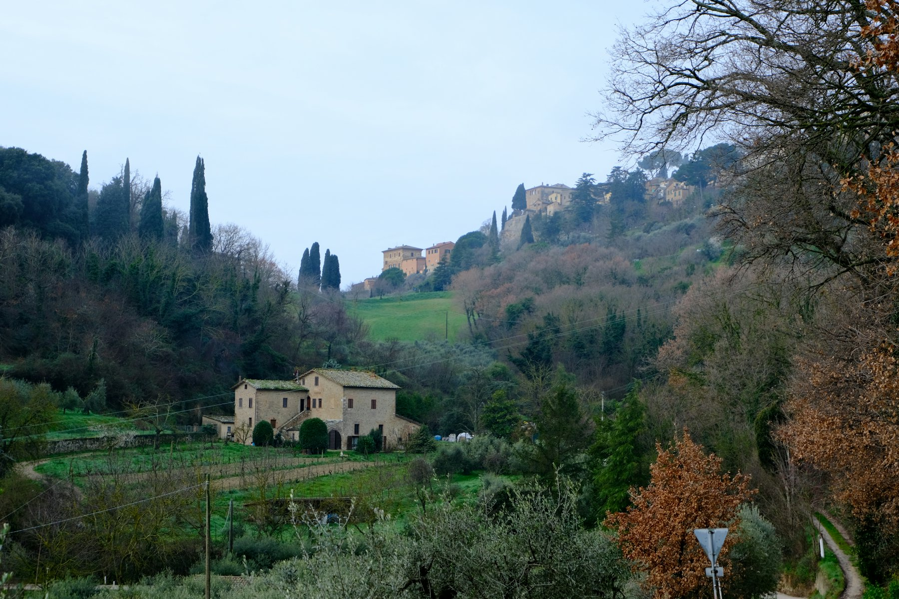

Overturearound 5 pm
The road into Chianti
Our driver meets you in Florence, at Via Senese 2, and the city gives way to cypress and vines. At the villa there is a glass waiting, and a walk through the vegetable garden and the vineyard.
